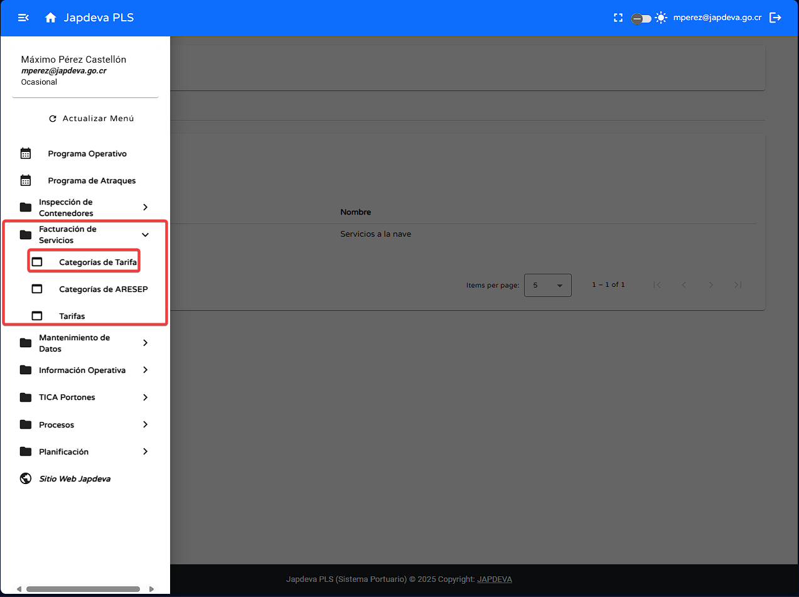

Bienvenido a la guía de usuario para la pantalla Categorías de Tarifa del sistema PLS. Esta guía está diseñada para ayudarte a utilizar y comprender de forma sencilla y directa las funcionalidades que ofrece esta pantalla.
Ubicada en el submenú Facturación de Servicios, esta pantalla permite registrar, consultar, actualizar y gestionar categorías de tarifa, incluyendo funciones para editar o eliminar registros existentes y mantener la estructura tarifaria actualizada.
Para realizar un registro eficiente de una nueva categoría se debe hacer lo siguiente:
Para realizar la búsqueda por filtro de manera exitosa se debe de seguir los siguientes pasos:
Para realizar la actualización de datos se debe seguir los siguientes pasos:
Para realizar alguna de estas acciones se debe de seguir los siguientes pasos:
Para editar una categoría existente se debe hacer lo siguiente:
Para eliminar una categoría existente se debe hacer lo siguiente:
Para brindar una experiencia más sencilla para comprender la información presente en pantalla se explicarán a continuación los diversos campos que conforman la tabla de datos. De izquierda a derecha).
Si necesitas ayuda adicional, contáctanos: